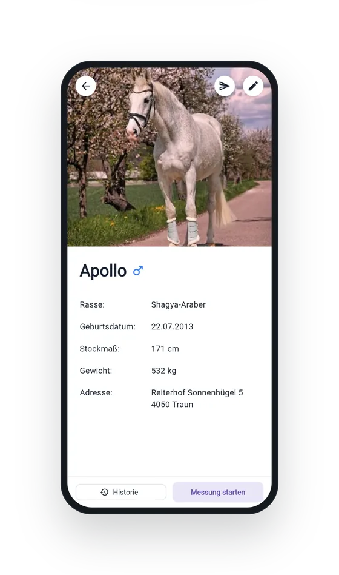
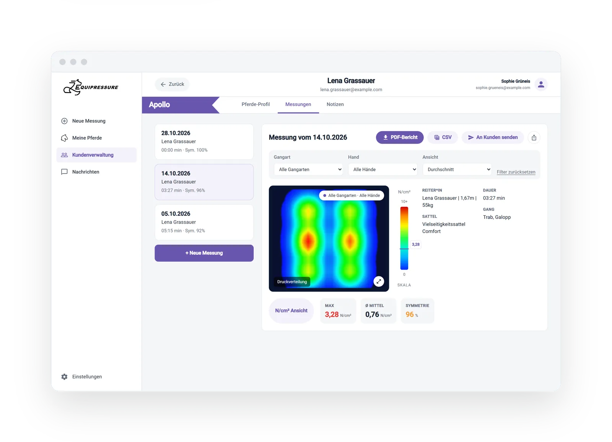

Jeder Rücken ist anders
Die Muskulatur verändert sich mit Training, Alter und Jahreszeit. Ein Sattel, der heute passt, kann in ein paar Monaten drücken.
Satteldruck-Messung
Satteldruck messen und sichtbar machen, für Reiter:innen und Sattler:innen. Eine Sensor-Satteldecke, zwei Apps und jede Messung auf einen Blick.

Das Problem
Die Muskulatur verändert sich mit Training, Alter und Jahreszeit. Ein Sattel, der heute passt, kann in ein paar Monaten drücken.
Er führt zu Verspannungen und Fehlhaltungen. Am Ende stehen oft teure Therapien und Tierarztbesuche.
Profi-Systeme sind teuer und nur bei Sattler:innen im Einsatz. Gemessen wird ein- bis zweimal im Jahr.
Unsere Lösung
Eine Sensor-Satteldecke, zwei Apps. Reiter:innen und Sattler:innen können beide messen und teilen ihre Ergebnisse miteinander.
Misst
Liegt unter dem Sattel, misst den Druck auf den Pferderücken und sendet ihn live per Bluetooth.
Misst & teilt
Selbst messen, jederzeit im Stall. Pferde, Sättel und alle Messungen sind an einem Ort.
Wertet aus & berät
Beim Termin messen und auswerten, Kund:innen verwalten und direkt im Chat beraten.
So funktioniert's
01
QR-Code am Messgerät scannen. Schon ist die Satteldecke mit der App verbunden.
02
Pferd, Sattel und Reiter:in auswählen.
03
In Schritt, Trab und Galopp, auf beiden Händen. Start und Ende bestimmst du selbst.
04
Ergebnis im Chat mit deiner Sattlerin oder deinem Sattler teilen und den Sattel anpassen.
Für Reiter:innen


Für Sattler:innen

Messung im Detail
So sieht das Ergebnis einer Beispielmessung aus.